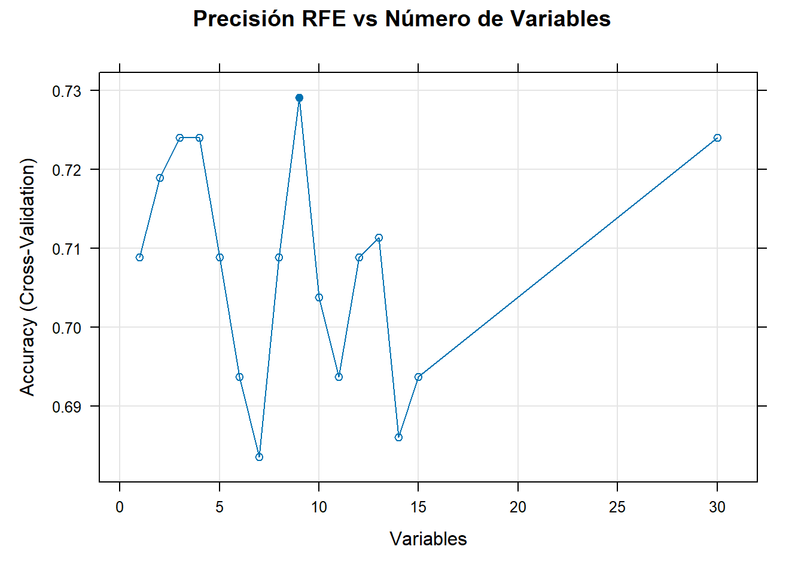

En este documento presentamos un flujo de trabajo completo para predecir el rendimiento estudiantil (Status: Pass/Fail). El análisis se divide en preparación de datos, selección de características y la comparación de cuatro escenarios experimentales combinando selección de variables y balanceo de clases.
1. Preparación de la base de datos para el modelaje
Primero, se cargan las librerías necesarias y la base de datos. Luego se realiza una conversión de variables numéricas y se define a la variable objetivo Status basada en la nota final (G3).
Análisis de la Distribución de Clases: Al observar la estructura de los datos, se observó un pequeño desbalance de clases. Según los registros se tiene 130 casos de “Fail” y 265 casos de “Pass”. En términos proporcionales, esto representa aproximadamente un 32.9% de reprobados frente a un 67.1% de aprobados. Este pequeño desequilibrio sugiere que los modelos sin balanceo podrían tener dificultades para detectar la clase minoritaria (“Fail”).
Code
# 1. SETUP & LIBRARIESif (!require(tidyverse)) install.packages("tidyverse")if (!require(caret)) install.packages("caret")if (!require(pROC)) install.packages("pROC")if (!require(randomForest)) install.packages("randomForest")if (!require(gbm)) install.packages("gbm")if (!require(kernlab)) install.packages("kernlab")if (!require(e1071)) install.packages("e1071")if (!require(Boruta)) install.packages("Boruta")if (!require(naivebayes)) install.packages("naivebayes")library(tidyverse); library(caret); library(pROC); library(randomForest)library(gbm); library(kernlab); library(e1071); library(Boruta); library(naivebayes)# Directoriosmain_dir <-"Resultados_CódigoFinal"dir.create(main_dir, showWarnings =FALSE)dir.create(file.path(main_dir, "02_Selection_Results"), showWarnings =FALSE)# 2. DATA PREPfilename <-"Data/studentmat.csv"# (Simulación de carga si el archivo no está en el path exacto del renderizado)if (!file.exists(filename)) {warning("Archivo no encontrado. Asegúrese de tener 'Data/studentmat.csv'")} else { df_raw <-read.csv(filename, sep =";", stringsAsFactors =FALSE) numeric_cols <-c("age", "absences", "G3", "Medu", "Fedu", "traveltime", "studytime", "failures", "famrel", "freetime", "goout", "Dalc", "Walc", "health", "G1", "G2")for(col in numeric_cols) {if(col %in%names(df_raw)) df_raw[[col]] <-as.numeric(df_raw[[col]]) } df_class <- df_raw %>%mutate(Status =ifelse(G3 >=10, "Pass", "Fail")) %>%mutate(Status =as.factor(Status)) %>% dplyr::select(-G1, -G2, -G3) %>%mutate(across(where(is.character), as.factor))# Imprimir proporciones para el reporteprint("Conteos:")print(table(df_class$Status))print("Proporciones:")print(prop.table(table(df_class$Status)))# Split Globalset.seed(123) trainIndex <-createDataPartition(df_class$Status, p =0.75, list =FALSE) train_full <- df_class[trainIndex, ] valid_full <- df_class[-trainIndex, ]}
2. Selección de Variables Relevantes para el Status de un Estudiante
El conjunto de datos original contiene numerosas variables, pero posiblemente no todas contribuyan a la detección de un estudiante en riesgo de reprobar. Incluir información irrelevante o redundante introduce “ruido” que puede llevar al sobreajuste (overfitting), haciendo que el modelo memorice los datos de entrenamiento en lugar de aprender patrones reales. Por tanto, filtrar las variables puede resultar ser una buena medida para simplificar la complejidad del modelo y mejorar su capacidad de generalización ante nuevos estudiantes.
Métodos de selección
Para lograr este proceso de selección de manera objetiva y evitar el sesgo inherente a un único algoritmo, se aplicó una estrategia de consenso utilizando tres técnicas distintas de selección:
Chi-Cuadrado: Para evaluar la relevancia estadística entre variables categóricas.
Boruta: Un método basado en Random Forest diseñado para detectar todas las variables relevantes (incluso las que tienen interacciones complejas).
RFE (Eliminación Recursiva de Características): Para encontrar el subconjunto óptimo de variables que maximiza la precisión del modelo mediante validación cruzada.
Resultados del Análisis de Importancia
Chi-Cuadrado: Destacó a higher (intención de cursar educación superior) como la variable más significativa, siendo la única validada por los tres métodos (3 votos).
Boruta: Confirmó la importancia crítica de failures (reprobaciones pasadas), schoolsup (apoyo educativo extra) y goout (salidas con amigos).
Discrepancias: Se observó que variables como guardian (tutor) y age (edad) fueron sugeridas por algunos métodos pero rechazadas por otros.
Criterio de Decisión (Matriz de Consenso): Para resolver estas discrepancias, se implementó una Matriz de votación uutomatizada. Se estableción como regla: una variable solo se selecciona si cuenta con el consenso de al menos 2 de los 3 algoritmos.
Code
# ---------------------------------------------------------# A. Chi-Cuadrado (Categórica vs Categórica)# ---------------------------------------------------------cat_vars <-names(df_class)[sapply(df_class, is.factor)]chi_df <-data.frame(Variable=character(), P_Value=numeric())for (v in cat_vars) {if (v !="Status") { test <-chisq.test(table(df_class[[v]], df_class$Status)) chi_df <-rbind(chi_df, data.frame(Variable=v, P_Value=test$p.value)) }}# Ordenar y Mostrar Resultadoschi_df <- chi_df[order(chi_df$P_Value),]print("--- TOP VARIABLES POR P-VALUE (CHI-CUADRADO) ---")
[1] "--- TOP VARIABLES POR P-VALUE (CHI-CUADRADO) ---"
# ---------------------------------------------------------# C. RFE (Eliminación Recursiva de Características)# ---------------------------------------------------------ctrl_rfe <-rfeControl(functions = rfFuncs, method ="cv", number =5)set.seed(123)# Excluir Status de los predictores para RFErfe_out <-rfe(df_class[, names(df_class) !="Status"], df_class$Status, sizes =c(1:15), rfeControl = ctrl_rfe)# Gráfico RFE en Españolplot(rfe_out, type=c("g", "o"), main="Precisión RFE vs Número de Variables")

Code
# Mostrar Variables Seleccionadasprint("--- VARIABLES ÓPTIMAS SEGÚN RFE ---")
# 4. Lógica de Selección Final# CRITERIO: Seleccionar variables con al menos 2 Votosfinal_vars <-as.character(decision_table$Variable[decision_table$Votos >=2])# IMPORTANTE: Asegurar que la variable objetivo 'Status' esté incluida# (Status no aparece en la votación porque no es predictora, es el objetivo)if(!"Status"%in% final_vars) final_vars <-c(final_vars, "Status")# Sobrescribir la lista para los siguientes pasos de modeladosel_vars <- final_varsprint("--- SELECCIÓN AUTOMATIZADA FINAL (Para Casos 3 y 4) ---")
[1] "--- SELECCIÓN AUTOMATIZADA FINAL (Para Casos 3 y 4) ---"
Variables como guardian, age, studytime, sex y famsize obtuvieron solo 1 voto, por lo que fueron descartadas para reducir el ruido.
El subconjunto final seleccionado para los modelos optimizados (Casos 3 y 4) consta de las 5 variables que alcanzaron 2 o más votos, más la variable objetivo: higher, failures, schoolsup, goout, absences y Status (Variable Objetivo).
3. Modelado: Evaluación de 4 Casos
Se define una función auxiliar para entrenar y evaluar múltiples modelos (GLM, GBM, RF, SVM, KNN y Rpart) bajo diferentes configuraciones o condiciones.
En este primer escenario base, se utilizan todas las variables disponibles sin corregir el leve desbalance de clases.
Al ejecutar este caso, se observa que el modelo GBM obtuvo el mejor AUC con 0.6425. Sin embargo, el problema del desbalance es evidente en la métrica de Sensibilidad (capacidad de detectar “Fail”), la cual fue muy baja para la mayoría de los modelos (ej. GBM con 0.25 y Random Forest con 0.4062). Esto indica que los modelos tienden a predecir la clase mayoritaria (“Pass”).
Code
# 1. Configuración del Control (Cross-Validation)ctrl_nobal <-trainControl(method ="cv", number =10, classProbs =TRUE, summaryFunction = twoClassSummary, savePredictions ="final")# 2. Lista de Modelos a evaluarmodels_case1 <-c("glm", "knn", "svmRadial", "rpart", "rf", "gbm", "naive_bayes")# 3. Ejecución del Experimento# Guardamos los resultados en 'res_c1'res_c1 <-run_experiment_case("Case 1", "Resultados_CódigoFinal/Results_Case1", train_full, valid_full, ctrl_nobal, models_case1)# 4. VISUALIZACIÓN DE RESULTADOS EN EL DOCUMENTO# (Esto es lo que faltaba para que aparezca en el reporte)print("--- TABLA DE RENDIMIENTO: CASO 1 ---")
[1] "--- TABLA DE RENDIMIENTO: CASO 1 ---"
Code
# Usamos kable para que la tabla se vea profesional en el reporteknitr::kable(res_c1, digits =4, caption ="Resultados: Todas las Variables / Sin Balanceo",row.names =FALSE)
Resultados: Todas las Variables / Sin Balanceo
Model
AUC
Accuracy
Sensitivity
Specificity
gbm
0.6425
0.6327
0.2500
0.8182
glm
0.6335
0.6122
0.3125
0.7576
rf
0.6127
0.7143
0.4062
0.8636
rpart
0.6125
0.6429
0.3750
0.7727
svmRadial
0.5909
0.7041
0.3125
0.8939
naive_bayes
0.5421
0.5918
0.3125
0.7273
knn
0.5386
0.6327
0.2500
0.8182
Caso 2: Todas las Variables / Con Balanceo (Up-Sampling)
Aquí se aplica la técnica de Up-Sampling para equilibrar las clases durante el entrenamiento.
Análisis de Resultados: Con el balanceo, el modelo GLM lideró la tabla con un AUC de 0.6316. Lo más destacable es la mejora drástica en la Sensibilidad: el GLM subió a 0.50 y el KNN a 0.5312. Aunque la Exactitud (Accuracy) general cae ligeramente respecto al Caso 1, el modelo es mucho más útil para identificar a los estudiantes en riesgo.
Code
# 1. Configuración del Control (Con Balanceo 'Up-Sampling')ctrl_bal <-trainControl(method ="cv", number =10, classProbs =TRUE, summaryFunction = twoClassSummary, savePredictions ="final",sampling ="up")# 2. Lista de Modelos (Estándar)models_std <-c("glm", "knn", "svmRadial", "rpart", "rf", "gbm")# 3. Ejecución del Experimentores_c2 <-run_experiment_case("Case 2", "Resultados_CódigoFinal/Results_Case2", train_full, valid_full, ctrl_bal, models_std)# 4. VISUALIZACIÓN DE RESULTADOSprint("--- TABLA DE RENDIMIENTO: CASO 2 ---")
[1] "--- TABLA DE RENDIMIENTO: CASO 2 ---"
Code
knitr::kable(res_c2, digits =4, caption ="Resultados: Todas las Variables / Con Balanceo (Up-Sampling)",row.names =FALSE)
Resultados: Todas las Variables / Con Balanceo (Up-Sampling)
Model
AUC
Accuracy
Sensitivity
Specificity
glm
0.6316
0.6122
0.5000
0.6667
gbm
0.6259
0.6327
0.4062
0.7424
rf
0.6120
0.6633
0.4062
0.7879
svmRadial
0.6009
0.5918
0.3750
0.6970
rpart
0.5881
0.6837
0.3125
0.8636
knn
0.5573
0.5714
0.5312
0.5909
Caso 3: Variables Seleccionadas / Sin Balanceo
En el Caso 3 (Variables Seleccionadas / Sin Balanceo), el modelo GLM obtuvo el mayor AUC (0.6671), seguido por GBM (0.6615). A pesar de la selección de variables, la sensibilidad (capacidad para detectar la clase positiva, que en este caso son los estudiantes que reprueban) sigue siendo baja, con un valor de 0.3750 para GLM y 0.3125 para GBM, lo que indica que el modelo no está capturando bien a los estudiantes en riesgo. La especificidad, en cambio, es alta (0.8485 para GLM), lo que significa que el modelo es bueno para identificar a los estudiantes que pasarán.
Code
# 1. Ejecución del Experimento# Utilizamos 'train_sel' y 'valid_sel' (definidos en la sección de selección)# Utilizamos 'ctrl_nobal' y 'models_std' (definidos en pasos anteriores)res_c3 <-run_experiment_case("Case 3", "Resultados_CódigoFinal/Results_Case3", train_sel, valid_sel, ctrl_nobal, models_std)# 2. VISUALIZACIÓN DE RESULTADOSprint("--- TABLA DE RENDIMIENTO: CASO 3 ---")
Resultados: Variables Seleccionadas / Sin Balanceo
Model
AUC
Accuracy
Sensitivity
Specificity
glm
0.6671
0.6939
0.3750
0.8485
gbm
0.6615
0.6224
0.3125
0.7727
svmRadial
0.6520
0.6633
0.3438
0.8182
knn
0.6302
0.6224
0.2500
0.8030
rf
0.6274
0.6327
0.3438
0.7727
rpart
0.6009
0.6939
0.3125
0.8788
Caso 4: Variables Seleccionadas / Con Balanceo
La combinación de selección de variables y balanceo produjo los mejores resultados para la identificación de estudiantes en riesgo. El modelo GLM alcanzó el mejor AUC del estudio (0.6806), seguido muy de cerca por SVM Radial (0.6802). Además, el balanceo permitió que la Sensibilidad alcanzara niveles significativamente más altos, con el modelo KNN logrando la mayor detección de casos en riesgo (0.6250), lo que confirma que tanto la reducción de dimensionalidad como el balanceo de clases son esenciales para construir modelos que realmente puedan identificar a los estudiantes que necesitan intervención.
Code
# 1. Ejecución del Experimento# Utilizamos 'ctrl_bal' (que incluye sampling="up") y las variables seleccionadasres_c4 <-run_experiment_case("Case 4", "Resultados_CódigoFinal/Results_Case4_Selected_Balanced", train_sel, valid_sel, ctrl_bal, models_std)# 2. VISUALIZACIÓN DE RESULTADOSprint("--- TABLA DE RENDIMIENTO: CASO 4 (OPTIMIZADO) ---")
[1] "--- TABLA DE RENDIMIENTO: CASO 4 (OPTIMIZADO) ---"
Resultados: Variables Seleccionadas / Con Balanceo (Up-Sampling)
Model
AUC
Accuracy
Sensitivity
Specificity
glm
0.6806
0.6327
0.5312
0.6818
svmRadial
0.6802
0.6531
0.5938
0.6818
knn
0.6683
0.6122
0.6250
0.6061
gbm
0.6584
0.6429
0.5000
0.7121
rf
0.6546
0.6429
0.4375
0.7424
rpart
0.5743
0.5918
0.5000
0.6364
4.Análisis comparativo del desempeño de los modelos
Resultados de los modelos
En esta sección, se combinan las tablas de rendimiento de cada caso (Todas las variables vs. Seleccionadas / Sin Balanceo vs. Con Balanceo) en un único conjunto de datos. Esta integración permitirá realizar una comparación directa y ordenada por AUC para determinar, con evidencia métrica, cuál fue la estrategia más efectiva para predecir el rendimiento estudiantil.
Code
# Código para generar la tabla final y gráficos# (Se asume que los dataframes res_c1, res_c2, res_c3, res_c4 existen)res_c1$Case <-"Case 1: All/NoBal"res_c2$Case <-"Case 2: All/Balanced"res_c3$Case <-"Case 3: Sel/NoBal"res_c4$Case <-"Case 4: Sel/Balanced"all_results <-bind_rows(res_c1, res_c2, res_c3, res_c4) %>% dplyr::select(Case, Model, AUC, Accuracy, Sensitivity, Specificity) %>%arrange(Case, desc(AUC))# Usamos kable para que la tabla se vea profesional en el reporte, sin nombres de filaknitr::kable(all_results, digits =4, caption ="Comparación de los 4 Casos", row.names =FALSE)
El objetivo más importante de este estudio es identificar a los estudiantes en riesgo de reprobación. En este contexto, el costo de no detectar a un estudiante que va a reprobar (Falso Negativo) es mucho mayor que el costo de intervenir innecesariamente con un estudiante que iba a aprobar (Falso Positivo). Por lo tanto, priorizamos la Sensibilidad sobre otras métricas.
Analizando los resultados del Caso 4 (Selección + Balanceo), presentamos las mejores opciones bajo este criterio:
La Opción de Máxima Seguridad: KNN (Caso 4)
Si la política institucional es “ningún estudiante en riesgo debe pasar desapercibido”, el K-Vecinos Más Cercanos (KNN) es la elección correcta.
Desempeño: Logró la Sensibilidad más alta del estudio (0.6250). Esto significa que es capaz de detectar el 62.5% de los casos de reprobación, superando a todos los demás algoritmos.
La Contrapartida: Su Especificidad es del 0.6061. Esto implica que habrá más “falsas alarmas” (estudiantes que el modelo marca en riesgo pero que aprobarían), lo cual requerirá más recursos docentes para intervenciones preventivas, pero garantiza la mayor cobertura de seguridad.
El Balance Óptimo: SVM Radial (Caso 4)
Si se busca un equilibrio donde se mantenga una alta detección de riesgo sin generar excesivas falsas alarmas, el SVM Radial es la mejor alternativa técnica.
Desempeño: Ofrece una Sensibilidad muy competitiva de 0.5938 (muy cerca del KNN) pero mejora significativamente la Especificidad a 0.6818.
Ventaja: Detecta casi la misma cantidad de estudiantes en riesgo que el KNN, pero se equivoca menos al clasificar a los estudiantes seguros, ofreciendo una gestión más eficiente de los recursos de tutoría.
Alternativa Destacada por AUC: GLM (Caso 4)
Aunque el Modelo Lineal Generalizado obtuvo el mejor AUC global (0.6806), su Sensibilidad de 0.5312 lo hace menos apto para este objetivo específico. Deja pasar a casi la mitad de los estudiantes en riesgo sin detectarlos, por lo que se descarta frente a la prioridad de seguridad del KNN o el SVM.
Hallazgos y conclusion del estudio
Hallazgos
Tras ejecutar el análisis completo, se han identificado los factores que más influyeron en el rendimiento estudiantil y los modelos que mejor logran predecirlo.
Variables influyentes en el Éxito o Fracaso académico en matemática
A través del método de consenso algorítmico (donde Chi-Cuadrado, Boruta y RFE votaron por las variables más fuertes), se determinó que el rendimiento de un estudiante no depende de todas las variables recolectadas, sino fundamentalmente de estas cinco:
failures (Historial de Reprobación): Es el predictor más fuerte. El historial académico pasado es el mejor indicador del futuro; un estudiante que ya ha reprobado anteriormente tiene un riesgo significativamente mayor.
higher (Aspiración Superior): La motivación intrínseca juega un papel importante. Los estudiantes que desean cursar educación superior muestran un perfil de aprobación mucho más sólido.
absences (Ausentismo): La asistencia regular es fundamental. Un número elevado de faltas correlaciona directamente con la probabilidad de reprobar.
goout (Vida Social): La frecuencia con la que el estudiante sale con amigos impacta su rendimiento, probablemente restando tiempo de estudio si es excesiva.
schoolsup (Apoyo Educativo Extra): Curiosamente, recibir apoyo extra es un indicador de riesgo, ya que generalmente se asigna a estudiantes que ya están teniendo dificultades académicas.
Resumen de los Modelos Más Eficaces
Basándose en el escenario optimizado (Caso 4: Variables Seleccionadas + Balanceo), estos son los tres modelos que mostraron el mejor desempeño para la detección de estudiantes en riesgo:
KNN (K-Vecinos Más Cercanos): Fue el mejor detector de riesgo. Si el objetivo es identificar a la mayor cantidad posible de estudiantes vulnerables (alta Sensibilidad), este es el algoritmo ganador.
SVM Radial (Máquina de Vectores de Soporte): Se destacó como la opción equilibrada. Ofrece un compromiso sólido entre detectar estudiantes en riesgo y no generar demasiadas falsas alarmas.
GLM (Regresión Logística): Sobresalió por su estabilidad global. Obtuvo el puntaje más alto en AUC, lo que significa que es matemáticamente el más robusto para separar las clases de “Pasa” y “Reprueba” en general, aunque es menos agresivo detectando el riesgo puro.
Conclusión
En conclusión, para cumplir con el objetivo de maximizar la detección de estudiantes en riesgo, se recomienda implementar el modelo KNN del Caso 4 (selección de variables y balanceo de clases). Aunque sacrifica precisión global, es la herramienta más efectiva disponible en este análisis para asegurar que la mayor cantidad posible de estudiantes vulnerables reciban atención temprana.